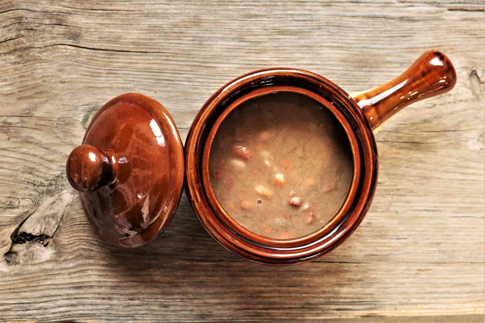

Pinto Beans

Pinto beans are the perfect match for white rice in a Brazilian lunch. The mix is so common that there is even a discussion about whether beans should go above or below the rice. For many years it was said that combining foods such as these in one meal was necessary to ensure that our body gets all the essential amino acids, but this myth has now been debunked.
Ingredients
- 50 g of pinto beans
- 1 tablespoon of olive oil
- 1 clove of garlic, minced
- 1 teaspoon of salt
Steps
- Soak the beans overnight.
- Cook the beans in the pressure cooker for about 15 to 20 minutes, with 2 fingers of water above the beans.
- After the beans are cooked, in another pan, saute the garlic.
- Add the cooked beans with the broth.
- Finally, adjust the salt.